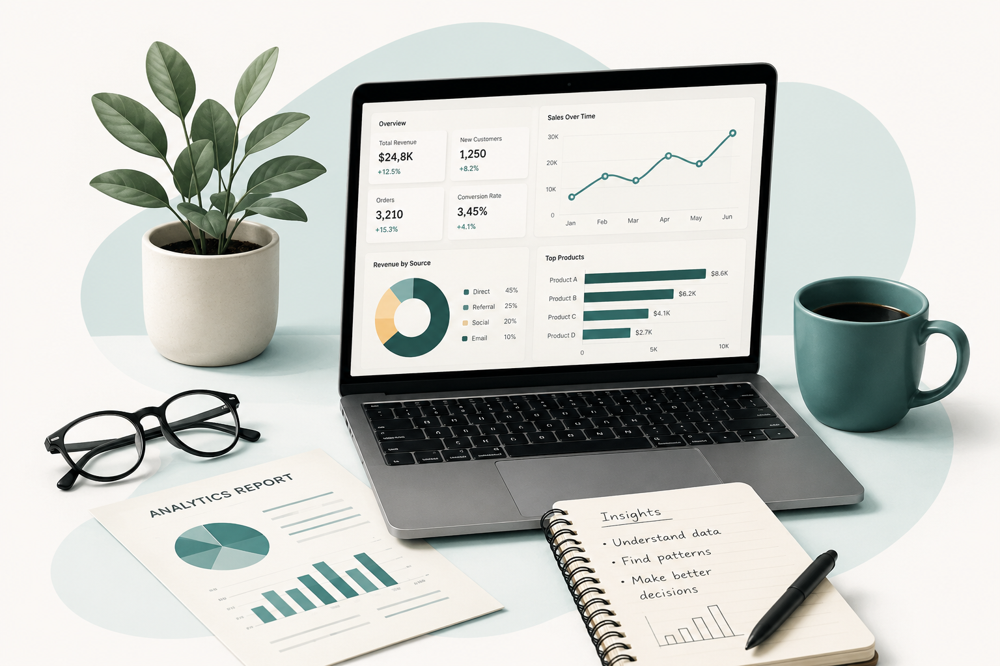

I turn messy data into decisions worth trusting.
Business analytics grad student with a habit of questioning the model before believing the output. Background in marketing and finance, now focused on analytics, dashboards, and the occasional regression that actually holds up.

About
01 / scopeI'm an MS Business Analytics student at UMass Amherst, building on a few years of work that started in marketing, moved through finance, and landed on data — because that's where the actual answers were hiding.
Before grad school, I was a Marketing Associate at Infosys and a Finance Associate at AP Urban. Both roles left me with the same itch: people kept making decisions on gut feel when the data could've told them something better. So now I build the things that tell them.
Most of my recent work lives in Python — pandas, scikit-learn, statsmodels — and in the kind of regression and classification problems that look clean in a textbook and messy in real datasets. I'm currently looking for roles in Business Analysis, Marketing Analytics, Data Analytics, and Product Analytics.
Selected projects
02 / workBest State to Live in US — Dashboard
Built a multi-sheet Excel dashboard comparing 10 US states across Education, Crime, Diversity, Employment, Demographics, Housing, and Healthcare. Pulled and transformed data with Power Query, automated composite scoring and conditional formatting with VBA, and surfaced an Affordability Index weighting income, rent, and employment rate side by side.
Oil Price & US Dollar — Commodity & Currency Analysis
Investigated the relationship between WTI crude oil prices and the US Dollar Index over a decade of weekly data. Pulled both series from FRED, merged and resampled them, computed percentage returns and lagged features, then ran OLS regression and a correlation heatmap across Oil Return, USD Return, and Lag Oil Return. The short answer: the relationship is real but weaker than most people assume.
F1 Telemetry & Race Pace Analysis
Pulled lap-by-lap telemetry with the FastF1 library and broke down driver pace, tire degradation, and sector deltas across a race weekend — mostly to settle an argument about who was actually faster.
Laptop Price Prediction
Built a multiple linear regression model to predict laptop prices from spec data, then stress-tested it with regularization to see which "important" features were actually just noise.
Marketing Analytics Pipeline
Designed an end-to-end pipeline that merges campaign, spend, and conversion data into one view, computes core marketing KPIs, and renders them as interactive Plotly dashboards — built for a real use case, not a toy dataset.
NYC Airbnb Data Analysis
Explored 48,000+ NYC Airbnb listings across all five boroughs, built interactive Plotly Express visualizations, and framed findings for three audiences — hosts optimizing pricing, guests finding value, and the platform managing supply. Identified neighborhood-level pricing patterns and availability seasonality.
Application of AI in the Beauty Industry — Research Paper
Authored a comparative research paper examining how Nykaa and Sephora deploy AI (virtual try-ons, personalization, chatbots, supply chain forecasting) in the Indian beauty market. Collected primary survey data from 115 respondents, ran chi-square tests and OLS regression, and surfaced findings on consumer trust, privacy concerns, and adoption barriers.
Target Sales Analysis
Analyzed Target retail sales data to uncover revenue trends, top-performing product categories, and regional performance patterns. Built category-level breakdowns and time-series visualizations to identify growth drivers and underperforming segments.
Skills
03 / toolkitLanguages & data
BI & Visualization
Data Engineering
Modeling & ML
Analytical Expertise
Education
04 / academicWork Experience
05 / track record- Mapped the learner funnel (activation → module-2 drop-off → completion) and built a weekly KPI dashboard in Excel and Tableau.
- Ran A/B tests on nudges (in-app + email timing/copy); course completion improved 12% and email CTR lifted 7–9%.
- Instrumented missing tracking events with the product team, enabling cleaner data transformation and improving cohort retention accuracy.
- Standardized field-office submissions with data validation, lookup logic, and error checks.
- Automated monthly A/P, A/R and ledger reconciliations in Excel (PivotTables, XLOOKUP, conditional flags).
- Trained staff on the new workflow and authored a "How to Read This Dashboard" guide for non-analysts.